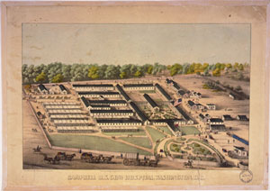

This is an archived copy of History Matters, provided by the Roy Rosenzweig Center for History and New Media. To explore this content in a new interface, visit Who Built America?.

Civil War Washington
http://civilwardc.org/
Created and maintained by the Center for Digital Research in the Humanities, University of Nebraska-Lincoln.
Reviewed March-April 2013.
During the Civil War era, Washington was a city of layers. Permanent residents, including shopkeepers, hotel owners, clergymen, prostitutes, laborers, and people in the vibrant African American community, coexisted with congressmen, clerks, and other temporary dwellers. The onset of war in 1861 brought even more texture to the capital as the military and medical presence grew and the city’s population tripled by 1865. Civil War Washington attempts to capture the growth and complexity of the city during the Civil War years, through census and other data, city maps, texts, images, and interpretive essays. Directed by Susan C. Lawrence, Elizabeth Lorang, Kenneth M. Price, and Kenneth J. Winkle, the Web site is well organized, easy to navigate, and aesthetically pleasing. It is also a work in progress. The Center for Digital Research in the Humanities began the site in 2006, but because of the breadth of the topic, development will continue indefinitely.

Thus far the best-developed part of the site is the maps feature, which allows visitors to compare a current map of Washington, D.C., with three historical representations of the city: an 1857 example, the famous 1861 Albert Boschke map, and J. G. Barnard’s 1871 Map of the Environs of Washington. Viewers can track changes in the city from December 1859 to July 1867 by using the time slider or focus specifically on the spatial distribution of black churches or bawdy houses by adding or removing layers on the screen. The site also provides a useful tutorial for exploring the map features. Another strength of Civil War Washington is its transparency. The introduction and interpretation pages include many of the grant proposals and other organizational materials used to fund and conceptualize the project. In addition to framing the subject matter for featured texts, introductory essays also provide the methodology and procedures behind both the transcriptions and encoding. Many of the pages include descriptions of documents, images, and other information the site hopes to acquire in the future.
Despite this transparency, the site’s target audience is unclear. Teachers may find the maps useful for classroom exploration, but the resources in the data section are limited primarily to census information widely available on other sites. Similarly, the transcribed texts are narrow in scope; currently, the site only includes emancipation petitions, medical cases from the Medical and Surgical History of the War of the Rebellion, 18611865 (6 vols., 18701888), and a small number of soldier newspapers. The search feature does allow for a quick and organized scan of the site’s materialsa search for blood, for example, turned up 163 results with 161 medical cases and 2 emancipation petitions that were easily sortablebut scholars will not find substantial new data for researching Civil War Washington. The site’s interpretive essays are also of limited use to scholars and students. Most of the essays include little to no documentation; even a further reading list at the bottom of each entry would greatly improve their usefulness for the classroom or interested readers. Civil War Washington is a promising site that may prove a valuable resource for educators and scholars with the future addition of more data and analysis.
Rachel A. Shelden
Georgia College
Milledgeville, Georgia